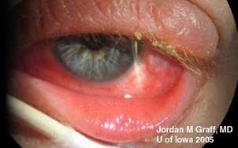

Conjunctiva · Viral conjunctivitis
Adenoviral conjunctivitis
The virus is easily transmitted by finger to eye contact, and it is self-limited (5-14 days)
Types
- Epidemic keratoconjunctivitis (EKC) caused by adenovirus type 8 and 19.
- Pharyngo-conjunctival fever (PCF) caused by adenovirus type 3 and 7.
Both types share the following:
- Acute red eye with photophobia and lacrimation.
- Subconjunctival hemorrhages as well as pre-auricular lymphadenopathy may occur in severe cases.
- Conjunctival follicles appear more in the lower conjunctiva and lower fornix.
- Keratitis which progresses in 3 stages from punctate epithelial keratitis, subepithelial lesions, then stromal infiltrates is characteristic in EKC.
- while systemic symptoms as fever and pharyngitis is common in PCF.
Treatment
- Mainly supportive (cold compresses, dark glasses, lubricants).
- Antivirals are not effective.
- Topical steroids will not shorten the course of the disease but suppress corneal inflammation in severe cases if visual acuity is diminished.
